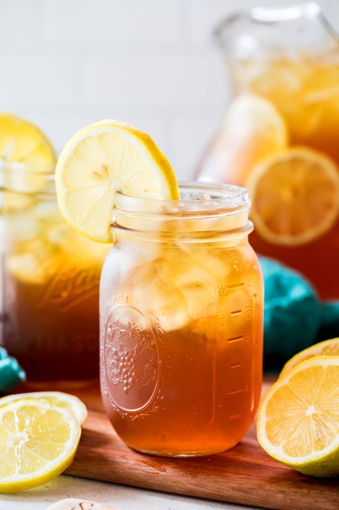

This is a Sweet Tea drink recipe
This Sweet Tea recipe uses a special secret ingredient for the BEST flavor! It comes together in just 15 minutes and can be enjoyed right away–no waiting required.
Ingredients
- 8 cups (1.9 L) water divided
- 6 black tea bags
- 1 cup (200 g) granulated sugar
- ⅛ teaspoon baking soda
- ¼ cup (60 ml) lemon juice optional (fresh-squeezed preferred)
Steps
- Combine 3 cups of water (310ml), sugar, and baking soda in a medium-sized saucepan over medium-high heat.
8 cups (1.9 L) water,1 cup (200 g) granulated sugar,⅛ teaspoon baking soda
- Bring to a boil, stirring occasionally, then immediately remove from heat.
- Add tea bags and steep for 10 minutes. Lift tea bags from the tea and allow them to drip (don’t squeeze), then discard.
6 black tea bags
- Pour tea into a large pitcher.
- Add lemon juice, if using, then add remaining 5 cups (1.2L) cold water and stir well.
¼ cup (60 ml) lemon juice
- Tea may be served immediately poured over ice, or store in the refrigerator for several hours before serving. Always stir before pouring.